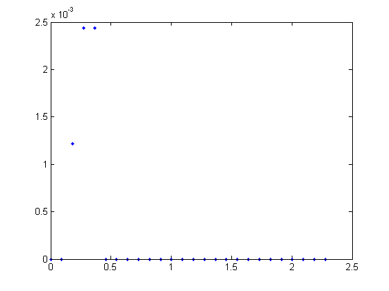

Resloution testing of a 12 bit DAC
With assumed max voltage values
clc clear all close all % Assuming that we can push 2^12 values to the DAC % then we can assume that the lowest value for desired % voltage is shown in the following assuming a frequency % of 8 Mhz for the data % clock_hz = 8; % in MHz bits = 12; % amount of data bits vmax = 5; % Volts posbits = 2^bits; % bits/volt vd = 0.004 %input('Enter Desired Peak Voltage: '); maxbs = vd*posbits/vmax; % bits n = 0:(maxbs - 1); t = linspace(0,(maxbs-1),(clock_hz*maxbs)); % n in .125 us steps sh = 1/clock_hz; % for 8 Mhz clock output = zeros(posbits,length(t)); t0 = t(1); for k = 1:maxbs for y = 1:length(t) if t(y) < (sh + t0) && t(y) >= t0 output(k,y) = n(k)*vmax/posbits; else output(k,y) = 0; end end t0 = t0 + sh; end ramp = sum(output); plot(t,ramp,'b.')
vd =
0.0040
